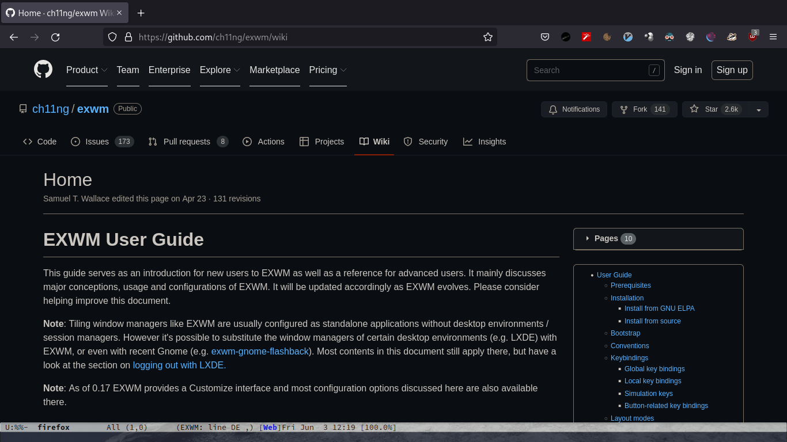

EXWM
Published on Jun 02, 2022 by Kristian Alexander P.
Configuration
header-args: :tangle ~/.config/exwm/config :mkdirp t
;;; Config --- Exwm Configuration -*- emacs-lisp -*- ;;; Commentary: ;; This configuration should not depends ;; on `user-init-file' but should detect if ;; it uses `straight.el'. ;;; Code:
package installation
As the commentary heading suggests, this exwm configuration should work even with no Emacs configuration file. But if you’re using not using Emacs why using exwm?
(if (featurep 'straight) (progn (straight-use-package 'exwm) (straight-use-package 'pinentry) (straight-use-package 'desktop-environment) (straight-use-package 'perspective) (straight-use-package 'perspective-exwm)) (progn (require 'package) (package-initialize) (customize-set-variable 'package-archives '(("gnu" . "https://elpa.gnu.org/packages/") ("nongnu" . "https://elpa.nongnu.org/nongnu/") ("melpa" . "https://melpa.org/packages/"))) (unless (featurep 'package-archive-contents) (package-refresh-contents)) (package-install 'exwm) (package-install 'desktop-environment) (package-install 'pinentry) (package-install 'perspective) (package-install 'perspective-exwm)))
The packages installed:
- exwm
- the EXWM package.
- pinentry
GnuPG Pinentryserver implementation.- desktop-environment
- The package desktop-environment provides commands and a global minor mode to control your GNU/Linux desktop from Emacs.
- perspective
- The Perspective package provides multiple named workspaces (or “perspectives”) in Emacs, similar to multiple desktops in window managers like Awesome and XMonad, and Spaces on the Mac.
- perspective-exwm
- A couple of tricks and fixes to make using EXWM and perspective.el a better experience.
package-archives is an alist of archives (package repositories) from which to fetch. gnu and nongnu are the defaults. As for the package installation method is determined by the featurep function, package-install is an Emacs builtin and straight.el is a next-generation, purely functional package manager for the Emacs hacker.
Variables and custom functions
Functions
- Background command
(defun exwm/run-in-background (command) "Run COMMAND in background if exists." (let ((command-parts (split-string command "[ ]+"))) (when (executable-find (car command-parts)) (apply #'call-process `(,(car command-parts) nil 0 nil ,@(cdr command-parts))))))
This is a wrapper function mainly used for starting up services and daemons related to Xorg startups. This is taken(
stolen) from https://config.daviwil.com/desktop. - fix exwm floating window
(defun +config/fix-exwm-floating-windows () "Fix behaviour when switching to floating." (setq-local exwm-workspace-warp-cursor nil) (setq-local mouse-autoselect-window nil) (setq-local focus-follows-mouse nil))
This function is for the
exwm-floating-setup-hook. I think this was from daviwil config. - exwm init hook wrapper
;; things that should runs after initializing exwm (defun +config/exwm-init-hook () "Things that should run after initialization." (when (file-exists-p "~/.fehbg") (exwm/run-in-background "~/.fehbg")) (exwm/run-in-background "xsetroot -cursor_name left_ptr") (exwm/run-in-background "xset r rate 300 30") (exwm/run-in-background "nm-applet") (exwm/run-in-background "/usr/lib/polkit-gnome/polkit-gnome-authentication-agent-1") (exwm/run-in-background "picom") (exwm/run-in-background "udiskie -t") (exwm/run-in-background "dunst") (exwm/run-in-background "blueman-applet") (exwm/run-in-background "xsettingsd") (exwm/run-in-background "unclutter"))
The process that should be started after EXWM initialize.
- ~/.fehbg
- This is a shell scripts created by the
fehapplications, it saves the last wallpaper(s) used in the previousfehinvocation. - xsetroot
- This program allows you to tailor the appearance of the background (“root”) window on a workstation display running X. the
-cursor_namearguments set the cursor’s pointer (this is what the EXWM wiki recommends). - xset
- Used to set various user preference options of the display. The
roption controls the keyboard autorepeat with the first argument after rate (300) specifies the delay and the second (30) specifies the rate. This value is also what the wiki recommends. - nm-applet
- Tray indicator for networkmanager. I don’t use system-tray in EXWM so this is not doing anything now.
- polkit-gnome
- Also not currently in use, I still considering whether this is actually needed for a window-manager.
- picom
- an X compositor
- setup window by class
(defun +config/setup-window-by-class () "Set rule based on window class name." (interactive) (pcase exwm-class-name ("XTerm" (perspective-exwm-assign-window :workspace-index 0 :persp-name "Term")) ("Termite" (perspective-exwm-assign-window :workspace-index 0 :persp-name "Term")) ("URxvt" (perspective-exwm-assign-window :workspace-index 0 :persp-name "Term")) ("firefox" (perspective-exwm-assign-window :workspace-index 2 :persp-name "Web")) ("Nyxt" (perspective-exwm-assign-window :workspace-index 2 :persp-name "Web")) ("qutebrowser" (perspective-exwm-assign-window :workspace-index 2 :persp-name "Web")) ("Thunar" (progn (exwm-workspace-add 3) (perspective-exwm-assign-window :workspace-index 3 :persp-name "Files"))) ("Spotify" (perspective-exwm-assign-window :workspace-index 4 :persp-name "Multimedia")) ("Cheese" (perspective-exwm-assign-window :workspace-index 4 :persp-name "Multimedia")) ("Picard" (perspective-exwm-assign-window :workspace-index 4 :persp-name "Multimedia")) ("hakuneko-desktop" (perspective-exwm-assign-window :workspace-index 4 :persp-name "Multimedia")) ("mpv" (progn (perspective-exwm-assign-window :workspace-index 4 :persp-name "Multimedia") (exwm-floating-toggle-floating))) ("vlc" (progn (perspective-exwm-assign-window :workspace-index 4 :persp-name "Multimedia") (exwm-floating-toggle-floating))) ("Gimp" (progn (exwm-input-set-local-simulation-keys nil) (exwm-floating-toggle-floating) (perspective-exwm-assign-window :workspace-index 4 :persp-name "Multimedia"))) ("TelegramDesktop" (perspective-exwm-assign-window :workspace-index 5 :persp-name "Chat")) ("Virt-manager" (perspective-exwm-assign-window :workspace-index 6 :persp-name "Remotes")) ("Vncviewer" (progn (exwm-floating-toggle-floating) (perspective-exwm-assign-window :workspace-index 6 :persp-name "Remotes"))) ("Org.remmina.Remmina" (perspective-exwm-assign-window :workspace-index 6 :persp-name "Remotes")) ("libreoffice-startcenter" (progn (exwm-input-set-local-simulation-keys nil) (perspective-exwm-assign-window :workspace-index 8 :persp-name "Work"))) ("libreoffice-writer" (progn (exwm-input-set-local-simulation-keys nil) (perspective-exwm-assign-window :workspace-index 8 :persp-name "Work"))) ("libreoffice-calc" (progn (exwm-input-set-local-simulation-keys nil) (perspective-exwm-assign-window :workspace-index 8 :persp-name "Work"))) ("libreoffice-draw" (progn (exwm-input-set-local-simulation-keys nil) (perspective-exwm-assign-window :workspace-index 8 :persp-name "Work"))) ("libreoffice-math" (progn (exwm-input-set-local-simulation-keys nil) (perspective-exwm-assign-window :workspace-index 8 :persp-name "Work"))) ("gsi" (exwm-input-toggle-keyboard))))
This will configure window based on their
exwm-class-name. To be run insideexwm-manage-finish-hook. - Switch to last workspace
(with-eval-after-load 'exwm (defun +config/exwm-workspace-switch-to-last () "Switch to last visited workspace." (interactive) "Switch to the workspace that was used before current workspace" (exwm-workspace-switch (cdr +config/exwm-workspace--switch-history-hack))))
A function to mimick the
workspace-back-and-forthfunction in i3wm. - logout
(defun +config/exwm-logout () "Logout cleanly from EXWM." (interactive) (recentf-save-list) (save-some-buffers) (save-buffers-kill-terminal))
A wrapper function to safely exit Emacs.
- Terminal
(defun +config/exwm-terminal () "Set the default terminal." (interactive) (let ((terminal (or (getenv "TERMINAL") (executable-find "xterm") (executable-find "urxvt") (executable-find "termite")))) (exwm/run-in-background terminal) (message "s-<f11> to toggle fullscreen")))
Wrapper function for terminal emulators.
- rofi
(defun +config/rofi-launcher () "Run rofi." (interactive) (exwm/run-in-background "rofi -show drun"))
Wrapper function for rofi. Visually better than
async-shell-command, which is the builtin way to execute command asynchronously in the background.
Variables
(customize-set-variable 'exwm-workspace-warp-cursor t) (customize-set-variable 'mouse-autoselect-window t) (customize-set-variable 'focus-follows-mouse t) (customize-set-variable 'exwm-workspace-number 10) (customize-set-variable 'persp-initial-frame-name "Main") (if +emacs-data-dir (customize-set-variable 'persp-state-default-file (expand-file-name "statesave" +emacs-data-dir)) (progn (let ((emacs-data-dir (expand-file-name ".local/share/emacs" (getenv "HOME")))) (customize-set-variable 'persp-state-default-file (expand-file-name "statesave" emacs-data-dir))))) (customize-set-variable 'persp-mode-prefix-key (kbd "C-c b"))
These are variables related to the EXWM package and builtin Emacs:
- exwm-workspace-warp-cursor
- warp cursor automatically after workspace switch.
- exwm-workspace-number
- Initial number of workspaces.
- mouse-autoselect-window
- autoselect window with mouse pointer (Emacs builtin).
- persp-initial-frame-name
- Name used for the initial perspective when enabling
persp-mode. - persp-state-default-file
- The file location for
persp-state-saveandpersp-state-load. The variable declaration is wrapped inside a function to guard in case+emacs-data-diris unbound (this is a custom variable from my Emacs configuration). - persp-mode-prefix-key
- The prefix keybinding for activating
perspective-map. Before Emacs version 28 the value for this variable is automatically set toC-x x. It’s unset in Emacs 28 sinceC-x xis used. I set this explicitly toC-c b(the FreeBSD ports used Emacs 27.2).
There are many other EXWM-related variables that can be set, see their github wiki for a full listing. For other Emacs non windows or frame specific variables, it’s better to put them inside user-init-file.
(with-eval-after-load 'exwm (defvar +config/exwm-workspace--switch-history-hack (cons exwm-workspace-current-index '())))
This variable is for exwm-workspace-switch-hook.
Global configuration
Cosmetic tweaks
;; Disable menu-bar, tool-bar and scroll-bar to increase the usable space. (menu-bar-mode -1) (tool-bar-mode -1) (scroll-bar-mode -1) ;; Also shrink fringes to 1 pixel. (fringe-mode 1)
I like to have my workspace (frame/buffer) free from distraction. Off course this is my personal preference.
Time
I’m not planning on using any panel, so I’ll need a time indicator in the Emacs modeline.
(require 'time) (setq display-time-default-load-average nil) (customize-set-variable 'display-time-24hr-format t) (customize-set-variable 'display-time-day-and-date t) (display-time-mode 1)
- display-time-default-load-average
- Which load average value will be shown in the mode line. Almost every system can provide values of load for the past 1 minute,
past 5 or past 15 minutes. The default is to display 1-minute load average. The other options are 1 for 5 minutes load, 2 for 15 minutes load, nil for none (do not display the load average).
start in server-mode
Emacs server is not required to run EXWM but it has some interesting uses.
(if (and (fboundp 'server-running-p) (not (server-running-p))) (server-start))
recentf
(require 'recentf)
In case recentf is not loaded.
perspective and perspective-exwm
(require 'perspective) (require 'perspective-exwm)
I use these packages in order to have a ’traditional window manager’ feel in regard to workspaces. In actuality, since this is basically Emacs every window resides inside an Emacs buffer. We can use the usual Emacs buffer operations to manage windows, so it’s fine just to have one workspace.
I’ve used perspective even before I started using EXWM, it’s useful for managing set of files in their separate “views” (perspectives), so in example, I can have one perspective containing buffers related to my blog files (it can be any Emacs buffers, like dired, eshell, etc.), and one buffer only related to my current ssh connections.
perspective-exwm further integrates perspective into EXWM, adding couples of fixes and enhancements. perspective-exwm-override-initial-name is handy to automatically set name for each workspaces:
(customize-set-variable 'perspective-exwm-override-initial-name
'((0 . "Term")
(1 . "Dev")
(2 . "Web")
(3 . "Files")
(4 . "Multimedia")
(5 . "Chat")
(6 . "Remotes")
(7 . "Games")
(8 . "Work")
(9 . "Others")))
As you can probably tell, workspaces in EXWM starts with 0.
gpg
(setenv "GPG_AGENT_INFO" nil) ;; use emacs pinentry (setq auth-source-debug t) (setq epg-gpg-program "gpg2") ;; not necessary (require 'epa-file) (unless (featurep 'epa) (epa-file-enable)) (setq epa-pinentry-mode 'loopback) (setq epg-pinentry-mode 'loopback) (pinentry-start) (require 'org-crypt) (org-crypt-use-before-save-magic)
This is for using pinentry inside Emacs. The gpg-agent configuration should also have this:
allow-emacs-pinentry allow-loopback-pinentry
The environment variable ${GPG_TTY} should also be set (via ~/.xprofile or ~/.profile).
Desktop Environment
(customize-set-variable 'desktop-environment-brightness-small-increment "1%+") (customize-set-variable 'desktop-environment-brightness-small-decrement "1%-") (customize-set-variable 'desktop-environment-brightness-normal-increment "1%+") (customize-set-variable 'desktop-environment-brightness-normal-decrement "1%-") (customize-set-variable 'desktop-environment-volume-normal-decrement "1%-") (customize-set-variable 'desktop-environment-volume-normal-increment "1%+") (customize-set-variable 'desktop-environment-screenshot-directory (expand-file-name "Screenshots/" (getenv "XDG_PICTURES_DIR"))) (unless (file-directory-p desktop-environment-screenshot-directory) (make-directory desktop-environment-screenshot-directory :parents))
The variables for Desktop Environment mode. See their github repo for details.
(with-eval-after-load 'desktop-environment (global-set-key (kbd "M-s-<f12>") 'desktop-environment-music-next) (global-set-key (kbd "M-s-<f11>") 'desktop-environment-toggle-music) (global-set-key (kbd "M-s-<f10>") 'desktop-environment-music-previous) (global-set-key (kbd "M-s-<f9>") 'desktop-environment-volume-increment) (global-set-key (kbd "M-s-<f8>") 'desktop-environment-volume-decrement) (global-set-key (kbd "M-s-<f7>") 'desktop-environment-toggle-mute)) (desktop-environment-mode)
Sets the keybinding for various desktop-environment functions.
Battery
(require 'battery) (with-eval-after-load 'battery (when (or (eq battery-status-function 'battery-bsd-apm) (eq battery-status-function 'battery-linux-sysfs) (eq battery-status-function 'battery-linux-proc-apm) (eq battery-status-function 'battery-linux-proc-acpi)) (display-battery-mode)))
EXWM
(require 'exwm)
hooks
(add-hook 'exwm-init-hook #'+config/exwm-init-hook)
Calls the function +config/exwm-init-hook defined earlier.
hide the modeline on all floating windows
(add-hook 'exwm-floating-setup-hook
(lambda ()
(exwm-layout-hide-mode-line)))
update title hook
(add-hook 'exwm-update-title-hook
(lambda ()
(when (or (not exwm-instance-name)
(string-prefix-p "sun-awt-X11-" exwm-instance-name)
(string= "gimp" exwm-instance-name))
(exwm-workspace-rename-buffer exwm-title))))
- exwm-update-title-hook
- The hook runs when window title is updated.
Basically this hooks will rename the buffer name to the current window title, unless the exwm-instance-name is null, or equal to sun-awt-X11 or gimp. This is from the EXWM wiki, I should update this.
floating setup hook
(add-hook 'exwm-floating-setup-hook #'+config/fix-exwm-floating-windows)
Calls the +config/fix-exwm-floating-windows function. Will run when an X window has been made floating, in the context of the corresponding buffer.
exwm-manage-finish-hook
(add-hook 'exwm-manage-finish-hook
(lambda ()
;; Send the window where it belongs
(+config/setup-window-by-class)))
This hook will call the +config/setup-window-by-class function, will run after a window is just managed, in the context of the corresponding buffer.
exwm-workspace-switch-hook
(add-hook 'exwm-workspace-switch-hook
(lambda ()
(setq +config/exwm-workspace--switch-history-hack
(cons exwm-workspace-current-index
(car +config/exwm-workspace--switch-history-hack)))))
The lambda function basically creates an alist containing the current workspace index and the previous workspace index. Used for switching back and forth between current and last workspaces.
bind the logout function
(exwm-input-set-key (kbd "C-x C-c") '+config/exwm-logout)
exwm-input-set-key is an alternative way to define a key binding inside EXWM. With the recommended way is:
exwm-input-global-key
(setq exwm-input-global-keys `( ;; Bind "s-r" to exit char-mode and fullscreen mode. ([?\s-r] . exwm-reset) ;; Bind "s-w" to switch workspace interactively. ([?\s-w] . exwm-workspace-switch) ([?\s-q] . delete-window) ;; Bind "s-0" to "s-9" to switch to a workspace by its index. ,@(mapcar (lambda (i) `(,(kbd (format "s-%d" i)) . (lambda () (interactive) (exwm-workspace-switch-create ,i)))) (number-sequence 0 9)) ([s-tab] . +config/exwm-workspace-switch-to-last) ([s-return] . +config/exwm-terminal) ([?\s-d] . +config/rofi-launcher) ;; Bind "s-&" to launch applications ('M-&' also works if the output ;; buffer does not bother you). ;; ([?\s-d] . (lambda (command) ;; (interactive (list (read-shell-command "$ "))) ;; (start-process-shell-command command nil command))) ([s-f11] . exwm-layout-toggle-fullscreen) ;; Bind "s-<f2>" to "slock", a simple X display locker. ([s-f1] . (lambda () (interactive) (start-process "" nil "/usr/bin/slock")))))
This variables is an alist of the form (key . command), meaning giving key (a key sequence) a global binding as command. Setting the value directly (rather than customizing it) after EXWM finishes initialization has no effect. Most of this is still from the EXWM wiki, with the exceptions in slock, +config/rofi-launcher, +config/exwm-terminal and +config/exwm-workspace-switch-to-last.
Keybinding to pass the next key
(define-key exwm-mode-map [?\C-q] #'exwm-input-send-next-key)
This defines a key binding in the exwm-mode-map major mode, in order to pass a key binding that already defined in the major mode, to the current window.
minibuffer position
;;(setq exwm-workspace-minibuffer-position 'bottom)
This hides the minibuffer and echo area.
input-simulation key
(setq exwm-input-simulation-keys '( ;; movement ([?\C-b] . [left]) ([?\M-b] . [C-left]) ([?\C-f] . [right]) ([?\M-f] . [C-right]) ([?\C-p] . [up]) ([?\C-n] . [down]) ([?\C-a] . [home]) ([?\C-e] . [end]) ([?\M-v] . [prior]) ([?\C-v] . [next]) ([?\C-d] . [delete]) ([?\C-k] . [S-end delete]) ;; cut/paste. ([?\C-w] . [?\C-x]) ([?\M-w] . [?\C-c]) ([?\C-y] . [?\C-v]) ;; search ([?\C-s] . [?\C-f])))
exwm-input-simulation-keys is an alist of the form (original-key . simulated-key), where both original-key and simulated-key are key sequences. Original-key is what you type to an X window in line-mode which then gets translated to simulated-key by EXWM and forwarded to the X window.
The codeblock above demonstrates how to use simulation keys to mimic the behavior of Emacs. The value of exwm-input-simulation-keys is a list of cons cells (SRC . DEST), where SRC is the key sequence you press and DEST is what EXWM actually sends to application. Note that both SRC and DEST should be key sequences (vector or string).
start perspective-exwm
(require 'perspective-exwm) (perspective-exwm-mode)
system tray
(require 'exwm-systemtray) (exwm-systemtray-enable) (setq exwm-systemtray-height 25) ; default 16
I don’t use it, but keep it inside the configuration file for reference.
enable exwm
(exwm-enable)
This function can be placed anywhere.
Screenshots
 EXWM with (almost) no Emacs configurations (and yes, Emacs can open images too).